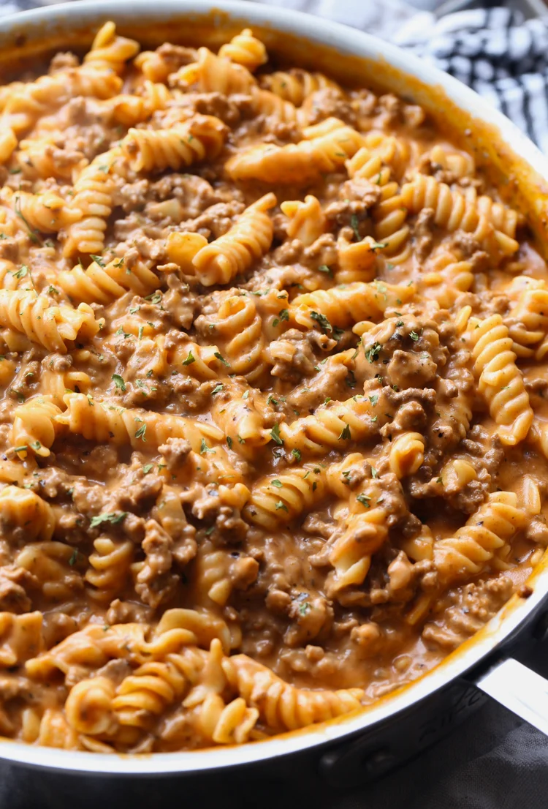

Creamy Bodybuilding Beef Pasta

Miracle dish from Italy!
An amazing cheesy beef pasta that is not only delicious
and healthy, but it's also going to make enough to split into meals for the entire
week or feed an entire family for dinner.
This recipe will take the guesswork out of your diet and ensure you're eating good,
while also eating nutritious and high protein at the exact same time
Ingredients
- 4 qts water
- 336g veggie pasta
- 30g white flour
- 2g oregano
- 2g onion powder
- 2g garlic powder
- 1g kosher salt
- Dash red pepper flakes
- 625g tomato/pasta sauce
- 240g beef broth
- 996g (2lbs) 96% lean ground beef
- 112g fat free cheddar
Steps
- Bring 4 qts of water to a boil (OPTIONAL) add a little bit
of kosher salt
- Once water is boiling, add veggie pasta and let cook for 7-8 mins
- Mix white flour, oregano, onion powder, garlic powder, kosher salt
and red pepper flakes in a small bowl
- Combine tomato/pasta sauce and beef broth in a bowl
- Oil large skillet and cook ground beef until browned
- Stir seasoning into beef and let cook for 1 min
- Pour sauce and stir everything together and bring it to a boil
- Lower heat to medium and let simmer for 10-15 mins
- Combine beef and pasta in large mixing bowl
- Pour 112g of fat free cheddar and mix everything together
Nutrition (Divided into 6 servings)
- Calories: 477
- Fat: 8g
- Protein: 47g
- Carbs: 55g